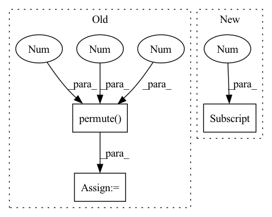

Pattern ID :2267
Before Change
x = x.permute(0, 3, 1, 2).view(x.size(0), x.size(3), x.size(1), self.size,
self.size) // B x T x (H x W) x C -> B x C x T x H x W
x = self.unpatch_emb(x)
x = x.permute(0 , 2 , 1 , 3, 4) // B x C x T x H x W -> B x T x C x H x W
return x
After Change
// example x: 1 x 21 x 256 x 64
x = self.attention(x) // 1 x 21 x 256 x 64
x = x.permute(0, 3, 1, 2).view(x.size(0), x.size(3), x.size(1), self.size, self.size) // B x T x (H x W) x C -> B x C x T x H x W
if x.shape[2] > 1: // not only image training
image, video = x[:, :, 0], x[:, :, 1:]
video = self.video_unpatch_emb(video)
image = self.image_unpatch_emb(image)
In pattern: SUPERPATTERN
Frequency: 6
Non-data size: 3
Instances Fragment ID: 7923338
Project Name: laion-ai/phenaki
Commit Name: 04c8fd7948c8e3b4ef008be5b788d4f067d5d9c2
Time: 2022-10-12
Author: d6582533@gmail.com
File Name: vivq.py
M Class Name: Decoder
N Class Name: Decoder
M Method Name: forward(2)
N Method Name: forward(2)
M Parent Class: nn.Module
N Parent Class: nn.Module
M File Name: vivq.py
N File Name: vivq.py
M Start Line: 83
M End Line: 86
N Start Line: 87
N End Line: 97
Before Change
if not self.batch_first:
// (t, b, c, h, w) -> (b, t, c, h, w)
input_tensor = input_tensor.permute( 1, 0 , 2 , 3, 4 )
b, _, _, h, w = input_tensor.size()
// Implement stateful ConvLSTM
if hidden_state is not None:After Change
cur_layer_input = torch.unbind(input, dim=int(self.batch_first))
if not hidden_state:
hidden_state = self.get_init_states(cur_layer_input[0] .size(int(not self.batch_first)))
seq_len = len(cur_layer_input)
Fragment ID: 7923323
Project Name: openclimatefix/metnet
Commit Name: 12d0ea12a39fb28fca3d382611857f23f060b5b6
Time: 2022-02-01
Author: jacob@bieker.tech
File Name: metnet/layers/ConvLSTM.py
M Class Name: ConvLSTM
N Class Name: ConvLSTM
M Method Name: forward(3)
N Method Name: forward(3)
M Parent Class: nn.Module
N Parent Class: nn.Module
M File Name: metnet/layers/ConvLSTM.py
N File Name: metnet/layers/ConvLSTM.py
M Start Line: 149
M End Line: 188
N Start Line: 160
N End Line: 182
Before Change
// p_cls = F.softmax(p_cls, 2) * p_conf // SSD-like conf
p_cls = torch.exp(p_cls).permute((2, 1, 0))
p_cls = p_cls / p_cls.sum(0).unsqueeze(0) * p_conf.permute((2, 1, 0)) // F.softmax() equivalent
p_cls = p_cls.permute(2 , 1 , 0 )
return torch.cat((xy / ngu, wh, p_conf, p_cls), 2).squeeze().t()
else: // inference
// s = 1.5 // scale_xy (pxy = pxy * s - (s - 1) / 2)After Change
anchor_wh = self.anchor_wh.repeat((1, 1, self.nx, self.ny, 1)).view((1, -1, 2)) / ngu
p = p.view(-1, 5 + self.nc)
xy = torch.sigmoid(p[..., 0:2]) + grid_xy[0] // x, y
wh = torch.exp(p[..., 2:4]) * anchor_wh[0] // width, height
p_conf = torch.sigmoid(p[:, 4:5]) // Conf
p_cls = F.softmax(p[:, 5:85], 1) * p_conf // SSD-like conf Fragment ID: 7923328
Project Name: mikel-brostrom/yolov3_deepsort_pytorch
Commit Name: 636c1cff7a91c0b54c996ef48b36274b08e4a8b8
Time: 2019-08-11
Author: glenn.jocher@ultralytics.com
File Name: models.py
M Class Name: YOLOLayer
N Class Name: YOLOLayer
M Method Name: forward(4)
N Method Name: forward(4)
M Parent Class: nn.Module
N Parent Class: nn.Module
M File Name: models.py
N File Name: models.py
M Start Line: 126
M End Line: 147
N Start Line: 126
N End Line: 135
Before Change
embed = embed_enc_inputs.size(2)
enc_h, (h, c) = self.Encoder(embed_enc_inputs, None)
ref = enc_h
query = h.permute(1 ,0 ,2 ) .to(device)// query = self.dec_input.unsqueeze(0).repeat(batch,1).unsqueeze(1).to(device)
process_h, process_c = [torch.zeros((1, batch, embed), device = device) for _ in range(2)]
for i in range(self.n_process):
query, (process_h, process_c) = self.Decoder(query, (process_h, process_c))
query = query.squeeze(1)
for i in range(self.n_glimpse):
query = self.glimpse(query, ref)
query = query.unsqueeze(1)After Change
enc_h, (h, c) = self.Encoder(embed_enc_inputs, None)
ref = enc_h
// ~ query = h.permute(1,0,2).to(device)// query = self.dec_input.unsqueeze(0).repeat(batch,1).unsqueeze(1).to(device)
query = h[-1]
// ~ process_h, process_c = [torch.zeros((1, batch, embed), device = device) for _ in range(2)]
for i in range(self.n_process):
// ~ _, (process_h, process_c) = self.Decoder(query, (process_h, process_c))
// ~ _, (h, c) = self.Decoder(query, (h, c)) Fragment ID: 7923332
Project Name: rintarooo/tsp_drl_ptrnet
Commit Name: 6e79534a9be0ef30e0f97fcccf1addf22312462c
Time: 2020-11-12
Author: 310rnomeado@gmail.com
File Name: critic.py
M Class Name: PtrNet2
N Class Name: PtrNet2
M Method Name: forward(3)
N Method Name: forward(3)
M Parent Class: nn.Module
N Parent Class: nn.Module
M File Name: critic.py
N File Name: critic.py
M Start Line: 41
M End Line: 51
N Start Line: 45
N End Line: 45
Before Change
patches = self.proj(x) // BCHW
B, C, H, W = patches.size()
patches = patches.view(B, C, -1).permute(0 , 2 , 1 ) // (batch_size, num_patches, d_model)
cls_tokens = self.cls_token.expand(B, -1, -1) // (batch_size, 1, d_model)
// concate cls_tokens to patches
embeddings = torch.cat([cls_tokens, patches], dim=1) // (batch_size, num_patches + 1, d_model)After Change
// NOTE: patchify with Conv2d works only with padding="valid" correctly on smaller images
// and has currently no ONNX support so we use this workaround
x = x.reshape(
B, C, (H // self.patch_size[0]), self.patch_size[0] , (W // self.patch_size[1]), self.patch_size[1]
)
// (B, H", W", C, ph, pw) -> (B, H"*W", C*ph*pw)
patches = x.permute(0, 2, 4, 1, 3, 5).flatten(1, 2).flatten(2, 4) Fragment ID: 7923335
Project Name: mindee/doctr
Commit Name: a95baaa8c71b859eae1c3292b3bd4225aa410ee5
Time: 2022-09-15
Author: felixdittrich92@gmail.com
File Name: doctr/models/modules/vision_transformer/pytorch.py
M Class Name: PatchEmbedding
N Class Name: PatchEmbedding
M Method Name: forward(2)
N Method Name: forward(2)
M Parent Class: nn.Module
N Parent Class: nn.Module
M File Name: doctr/models/modules/vision_transformer/pytorch.py
N File Name: doctr/models/modules/vision_transformer/pytorch.py
M Start Line: 42
M End Line: 45
N Start Line: 45
N End Line: 50